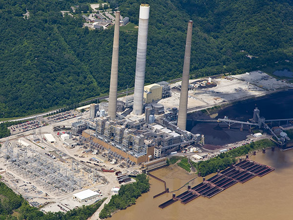

Project requirements
Construct a Type I landfill while closing two ash ponds. The concurrent work requires coordination of field production, grade control, dewatering, materials, quality, cost, and schedule.
Landfill construction & ash-pond closure · Madison, Indiana
Dec 2025–Present

At AEP–OVEC/IKEC Clifty Creek Station in Madison, Indiana, I serve as Lead Field Engineer and Construction Quality Control Manager for a three-year, $60 million environmental-infrastructure project.
The work encompasses construction of a Type I landfill and closure of the 75-acre West Boiler Ash Pond and 51-acre Leachate Runoff Collection Pond.
Construct a Type I landfill while closing two ash ponds. The concurrent work requires coordination of field production, grade control, dewatering, materials, quality, cost, and schedule.
I direct field sequencing, coordinate crews and equipment, and verify work against plans and specifications. I manage forecasts, track materials and costs, lead corrective actions, and supervise and train four field engineers in surveying, safety, reporting, and project controls.
I designed dewatering ditches that collectively handle more than one million gallons per month.